Early Data Analysis
In our early data exploration, we focused on visualizing both datasets to determine how to best move forward in model creation.
FAOSTAT EDA:
Looking at the FAOSTAT dataset, we visualized the data in numerous ways including simply ploting temperature change by month and year to gauge trends, and by checking for correlation between months and temperature change to see if there were certain months that might contribute more to our models. Below are two plots from this analysis.
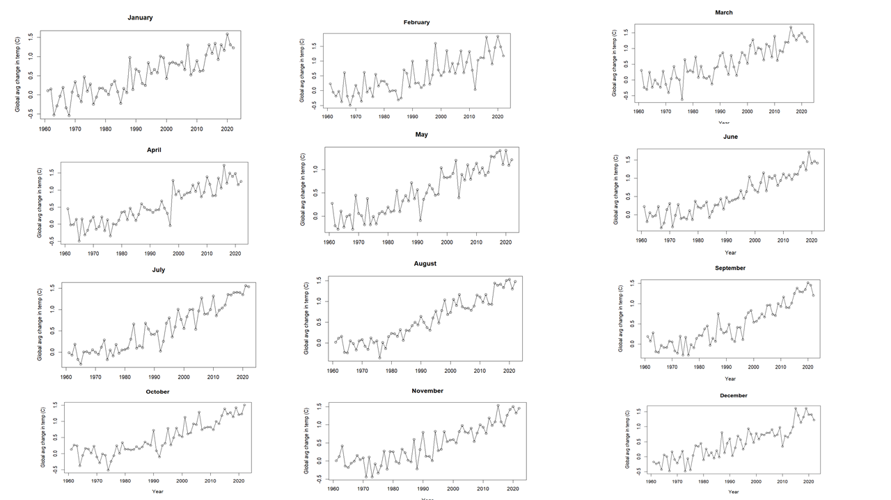
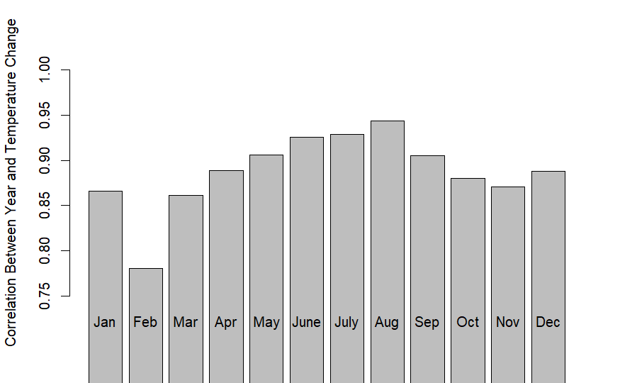
NFA EDA:
Looking at the NFA dataset, we visualized the distributions of various numerical variables in the data.This initial EDA helped us see that this data set might not provide the same amount of information for every country so it should be used in a more supplementary way. Moving forward we thought it would be a good idea to use this data set to create clusters since we could group countries based on similarity in their land use.
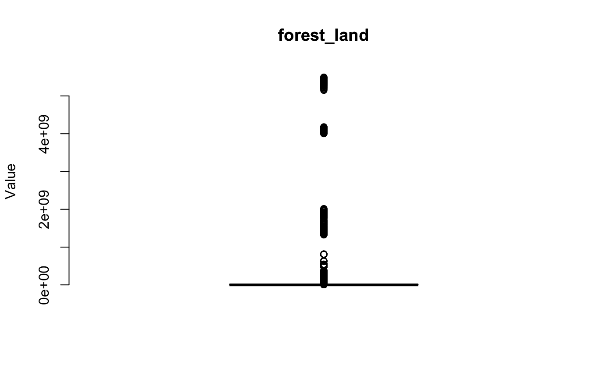
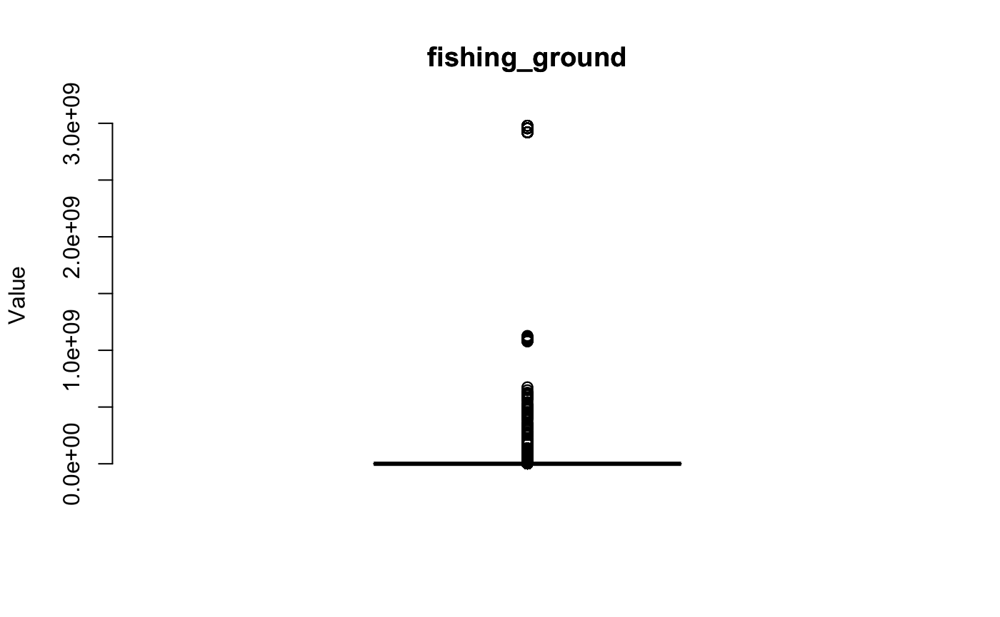
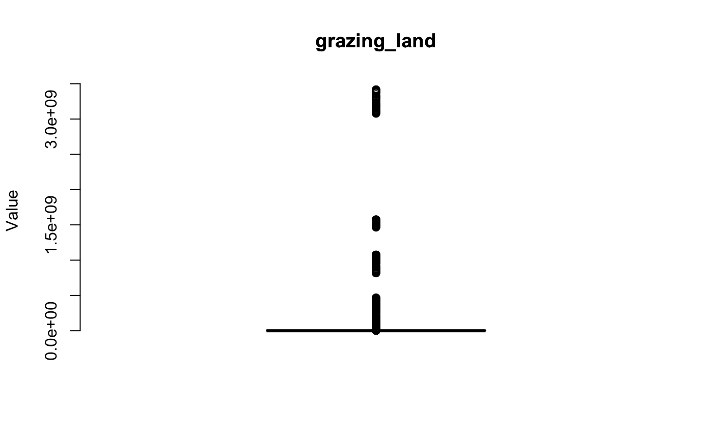
Grouping:
After running dimensionality reduction techniques on our NFA dataset, we used K-Means Clustering and Hierarchical Grouping techniques to form unique groups of countries to later create models on. We decided to further explore clusters with 5 groups and 3 groupings for hierarchical analysis.


K-Means Clustering, 5 Groups
- Group 1: Brazil, India, Russia
- Group 2: China
- Group 3: All other countries
- Group 4: Argentina, Australia, Canada, France, Germany, Indonesia, Iran, Italy, Japan, Kazakhstan, Korea, Mexico, Nigeria, Poland, Saudi Arabia, South Africa, Spain, Thailand, Turkey, Ukraine, UK, Vietnam
- Group 5: United States of America
Hierarchical Clustering, 3 Groups
- Group 1: Armenia, Afghanistan, Albania, Algeria, Angola, Argentina, Bangladesh, Bolivia, Brazil, Myanmar, Burundi, Cameroon, Central African Republic, Sri Lanka, Chad, Colombia, Congo, Costa Rica, Cuba, Azerbaijan, Benin, Dominican Republic, Ecuador, El Salvador, Djibouti, Georgia, Gabon, Gambia, Ghana, Guatemala, Guinea, Guyana, Haiti, India, Indonesia, Iraq, Cote d'Ivoire, Jamaica, Jordan, Kyrgyzstan, Kenya, Lao People's Democratic Republic, Lesotho, Liberia, Madagascar, Malawi, Mali, Mauritania, Mexico, Morocco, Mozambique, Moldova, Namibia, Nepal, Nicaragua, Niger, Nigeria, Pakistan, Panama, Papua New Guinea, Paraguay, Peru. Philippines, Guinea-Bissau, Timor-Leste, Eritrea, Zimbabwe, Rwanda, Saint Lucia, Senegal, Sierra Leone, Somalia, Tajikistan, Swaziland, Syrian Arab Republic, United Republic of Tanzania, Thailand, Togo, Tunisia, Uganda, Burkina Faso, Uruguay, Uzbekistan, Viet Nam, Ethiopia, Yemen, Democratic Republic of Congo, Zambia, Sudan, South Sudan
- Group 2: Australia, Bahrain, Brunei Darussalam, Canada, Kazakhstan, Republic of Korea, Kuwait, Mongolia, Qatar, Saudi Arabia, Singapore, Turkmenistan, Trinidad and Tobago, Oman, United Arab Emirates, United States of America, Luxembourg
- Group 3: Austria, Bahamas, Barbados, Bhutan, Botswana, Belize, Bulgaria, Chile, Denmark, Belarus, Equatorial Guinea, Estonia, Fiji, Finland, France, French Guiana, French Polynesia, Germany, Bosnia and Herzegovina, Greece, Guadeloupe, Hungary, Croatia, Iran, Islamic, Ireland, Israel, Italy, Japan, Democratic People's Republic of Korea, Latvia, Lebanon, Libyan Arab Jamahiriya, Lithuania, Malaysia, Malta, Netherlands, Macedonia TFYR, Norway, Czech Republic, Poland, Portugal, Romania, Russian Federation, Slovenia, Slovakia, South Africa, Spain, Suriname, Sweden, Switzerland, United Kingdom Turkey, Ukraine, Bolivarian Republic of Venezuela, Belgium, Serbia, Montenegro, China
After determining these clusters, we decided to go forth with creating time series, ensemble, and RNN models using these clusters, worldwide data, and geographical region data.
Models
For our supervised models, we used the clusters from the NFA dataset to form groups in our FAOSTAT dataset, along with worldwide, and geographical region data from the FAOSTAT dataset to make time series, ensemble, and RNN models for each of these. In total, we made 34 models across the different data groups and model methods.
Time Series Models
For our time series forecasting, we used ARMA(p,q) models to fit our data. After removing any trends, seasonality, or other temporal dependencies in the data we found that our data exhibits iid noise and stationary behavior, making it well suited for ARMA(p,q) models. The monthly data was very noisy, despite removing trends and seasonality, so we decided to not fit the monthly data to any models and instead used yearly data. ARMA models are commonly used in time series forecasting and provide unique insight on time series data because they create forecasts based on both lagged observations and the past error terms. They provide robust forecasting results that take temporal dependancies and short term flucations into account.
For each of the time series models we made, we followed these steps below to ensure we fit our models well. With some of the steps are examples of some of the plots we used to validate our results.
- Remove temporal dependencies
- Run analysis on residuals including viewing ACF, PACF, Normal Q-Q Plots, and Augmented Dickey-Fuller Test
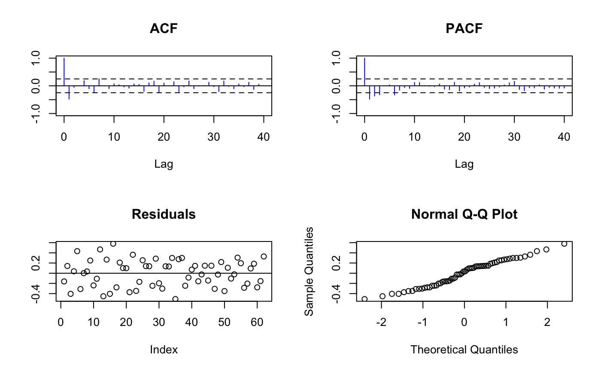
- Set aside last 5 years of data for testing and train a model to rest of data, minimizing AIC value and RMSE, and checking how the data vs. model ACF plots compare
 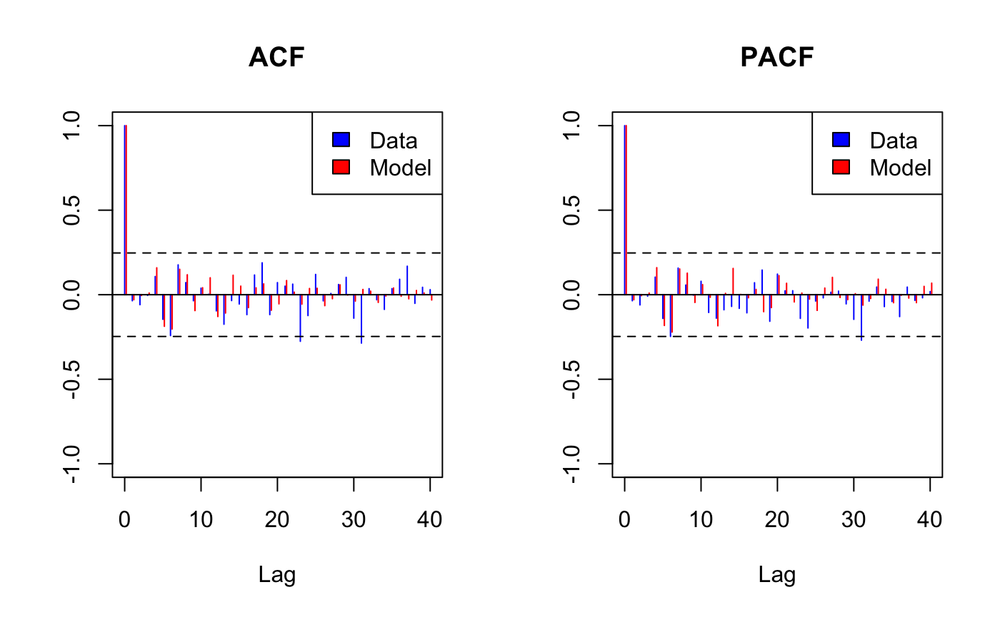
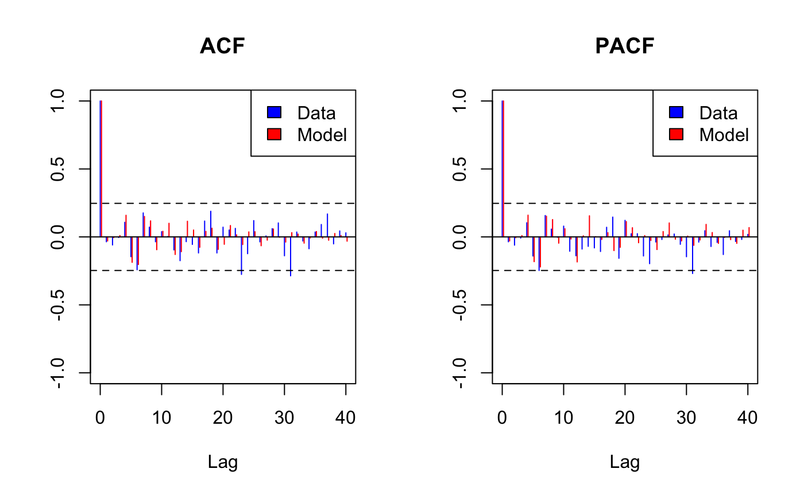
- Check once more that residuals after model fitting exhibit iid noise behavior
- Use ARMA(p,q) model just made to forecast next 5 or more years of temperature change
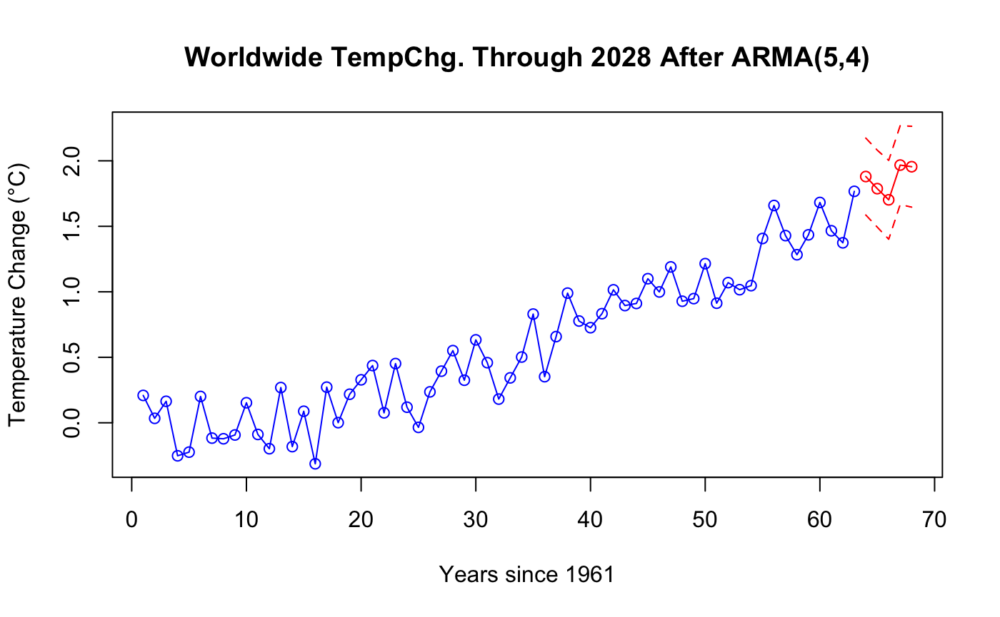
We followed this framework above when creating models for each of our data groups. At the end of this page is a summary of all of our models which contains the next year forecast and RMSE for each of the models we made.
Ensemble Models
We made ensemble models based on our time series and RNN models when it was appropriate. Our ensemble models were combinations of models with subgroups of the worldwide countries, which would thus be combined to create a model that could be compared to the model made with worldwide data. These ensemble models provide unique insight into worlwide temperature change predictions because they effectively weigh certain countries' contributions to the temperature change based on different factors such as higher ecological footprint or geographical region.
In total, we made an ensemble model from our geographical region time series model, k-means cluster time series model, hierarchical cluster time series model, geographical region RNN model, k-means cluster RNN model, and hierarchical cluster RNN model.
We found that our ensemble models produced lower RMSE values when compared to their counterparts, indicating success in the models. Below are some examples of forecasting for ensemble models compared to their components. Note: for the clustering groups, the black line indicates the ensemble model forecast results.
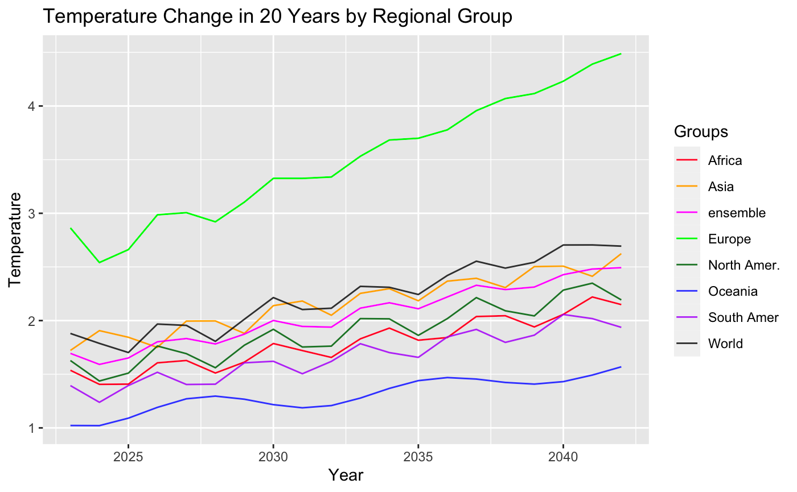
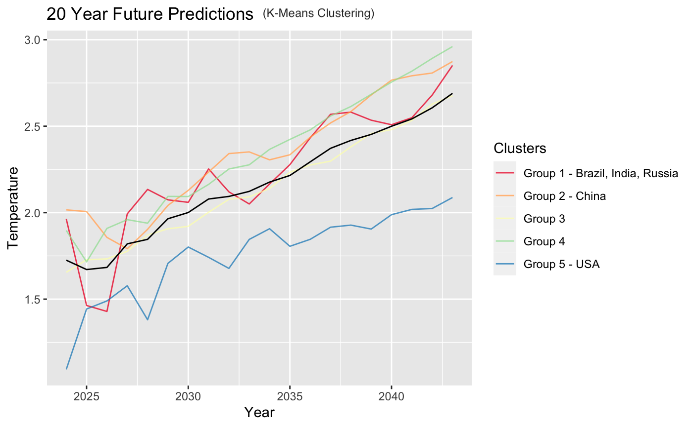
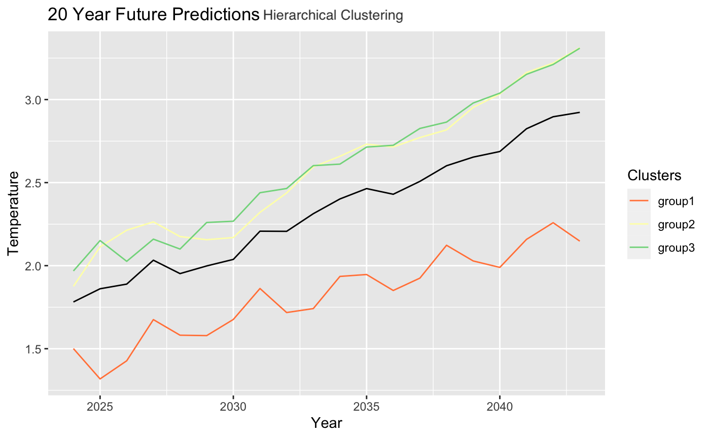
Recurrent Neural Networks
We decided to create RNN models in addition to our time series models since they are useful for detecting overall trends in noisy data and predicting locations of future spikes. In our RNN models, we use various layers including: Long Short-Term Memory (LSTM) to capture long-term dependencies in sequential data, Dropout to randomly selects neurons for deletion to prevent overfitting, bidirectional to analyze sequential data forwards and backwards to detect more patterns, and dense layers to fully connect the layers and to detect complex patterns.
Our naive attempt used just one LSTM layer and one Dense layer, a RELU activation function for nonlinearity, and 10 epochs. Seen below, it produced inadequate results
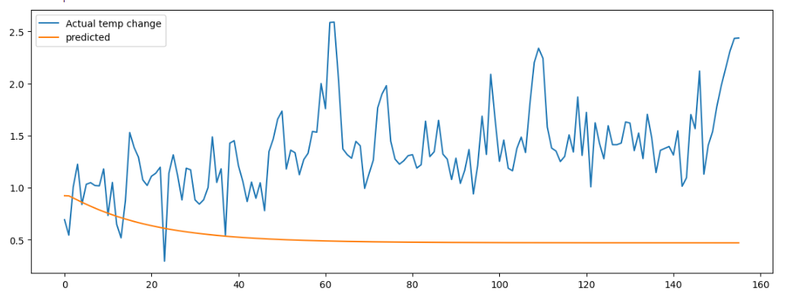
Following this naive model, we improved our model which included 1 bidirectional layer, 3 LSTM layers, 3 dropout Layers, and 2 dense layers. We used a different loss function here as well. Below is our improved model on the worldwide data group.
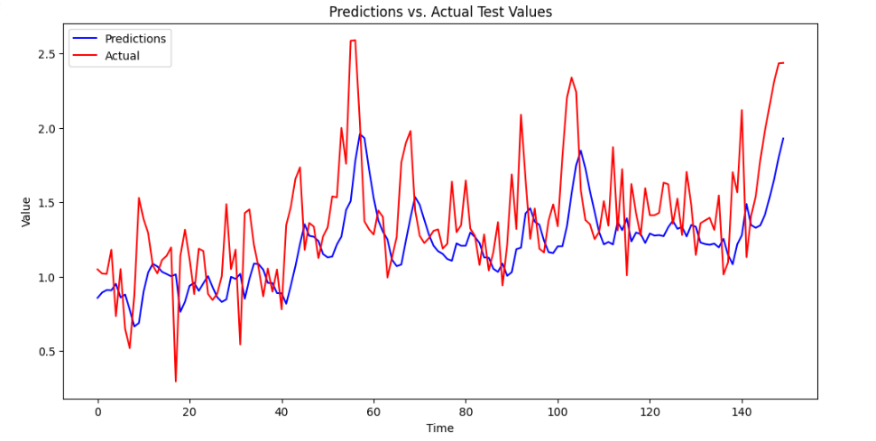
Following this, we made RNN models for each of the data groups. They will be concluded in the table below.
Model Results
After creating all of the time series, RNN, and ensemble models, we compared their next-year forecasting results and RMSE values. In general, we found that our time series models produced better results for short term forecasting but could not capture long term trends and flucuations as well as the RNN models could. Additionally, the ensemble models outperformed their counterparts, indicating that they could be useful in forecasting worldwide temperature change.
As a reminder, these forecasted results are indicating the approximate temperature change in degrees celsius for certain data groups one year into the future based on a baseline temperature from 1951-1980.
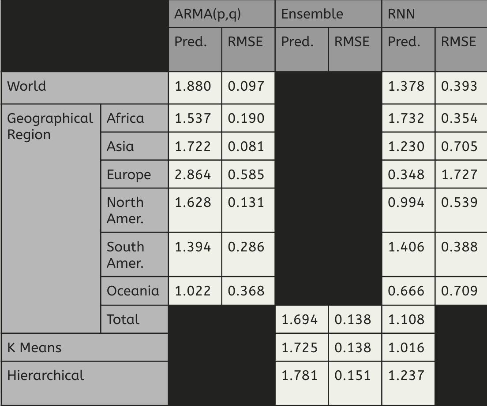
We chose not to include each of the 34 models' results here since they are very repetitive. Instead, we included the most insightful results.
Upon comparing our regional temperature change results to the FAOSTAT published results from the past year, it is evident that our models are correctly predicting which regions will experience higher levels of temperaure change.
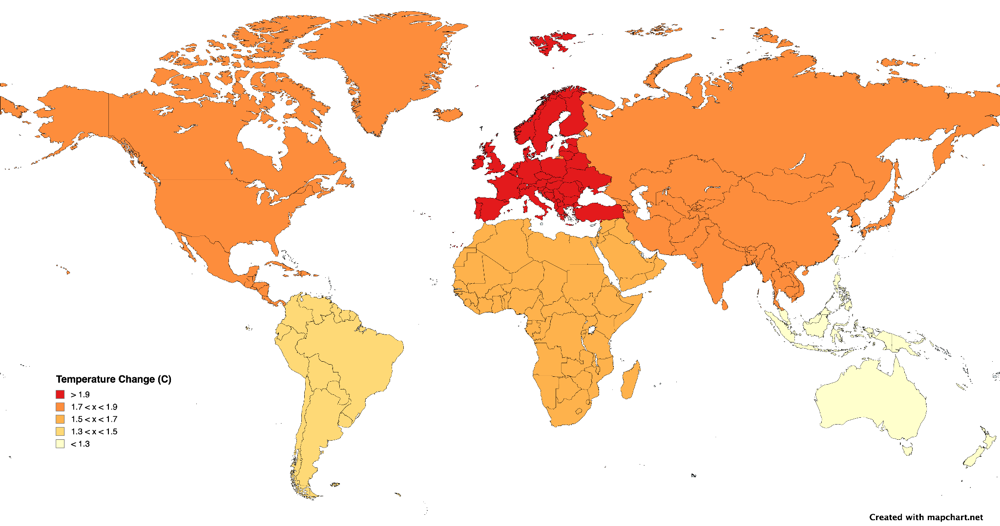
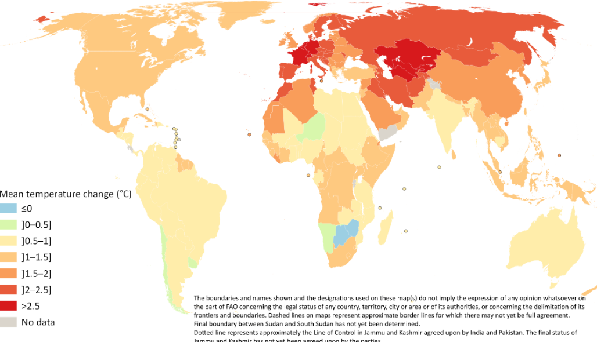
Conclusions
In concluding our project, we found that splitting the data by geographical regions gave interesting insight into the temperature change we might expect across different parts of the world, whereas splitting the data into groups based on clustering and hierarchies gave insight into which countries share similar footprint data and thus might exhibit similar temperature change results. We also found that the time series models are effective at predicting short term future temperature change forecasts, most of them performing with very confident data that aligns with the FAOSTAT data, the ensemble models tend to perform better than their components but not necessarily better than the world model, and the RNN (LSTM specifically) performed worse than the time series models with one feature available in the data but still provide important insight into long term trends in temperature change.
If we continued this project, we think that exploring how to better fit models to monthly data, adding more features to the LSTM model, creating models by individual country, and comparing our results with results from multiple climatologists could all yield great results and further assess our project.